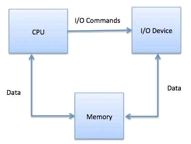
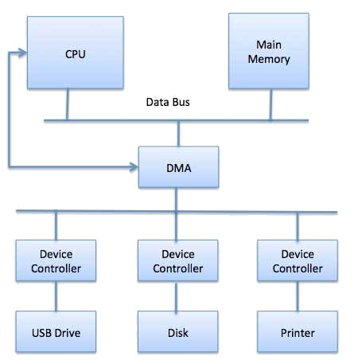
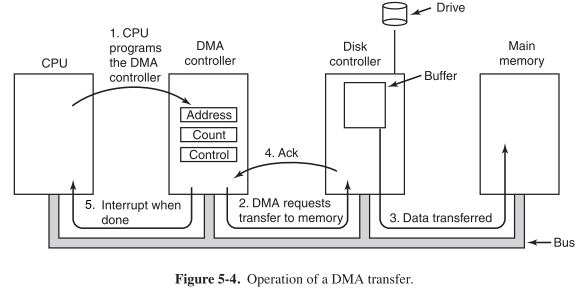
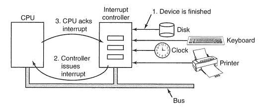

I/O devices can be roughly divided into two categories: block devices and character devices.
The electronic component of I/O units is called the device controller or adapter. Operating systems use device drivers to handle all I/O devices. There is a device controller and a device driver for each device to communicate with the operating system. A device controller may be able to handle multiple devices. As an interface its main task is to convert serial bit stream to block of bytes, and perform error correction as necessary.

The controller has registers (similar to CPU registers, but for the device) and the OS can write these registers to "give orders" to the device (e.g., "shut down" or "accept data") or read its state (e.g., "are you busy tonight?").
CPU interaction with the control registers and device data buffers either through dedicated port allocation or using device memory to map them all. CPU can communicate with the control registers and the device data buffers in three ways.
To reduce the overhead of interrupts, DMA hardware bypasses CPU to transfer data directly between I/O device and memory. DMA module itself controls exchange of data between main memory and the I/O device. CPU is only involved at the beginning and end of the transfer and interrupted only after entire block has been transferred, rather than a byte at a time.

DMA controller (DMAC) manages the data transfers and arbitrates access to the system bus. It contains several registers that can be written and read by the CPU. These include a memory address register, a byte count register, and one or more control registers.

DMA controllers vary considerably in their sophistication. The simplest ones handle one transfer at a time, whereas sophisticated DMAC have multiple sets of registers internally, one for each channel. Word transfer may be set up to use a round-robin algorithm, or it may have a priority scheme design to favor some devices over others. Many buses can operate in two modes: word-at-a-time mode and block mode. Some DMA controllers can also operate in either mode. In word-at-a-time mode, the DMA controller requests the transfer of one word and gets it. If the CPU also wants the bus, it has to wait. The mechanism is called cycle stealing because the device controller sneaks in and steals an occasional bus cycle from the CPU once in a while, delaying it slightly. In block mode, the DMA controller tells the device to acquire the bus, issue a series of transfers, then release the bus. This form of operation is called burst mode. It is more efficient than cycle stealing because acquiring the bus takes time and multiple words can be transferred for the price of one bus acquisition. The down side to burst mode is that it can block the CPU and other devices for a substantial period if a long burst is being transferred.
When an I/O device has finished the work given to it, it causes an interrupt by asserting a signal on a bus line that it has been assigned, signals that are detected by the interrupt controller chip. If no other interrupts pending, the interrupt controller processes the interrupt immediately. If another interrupt is in progress or there is a simultaneous request on a higher-priority interrupt request line which it continues to assert until serviced by the CPU. The controller puts a number on the address lines and asserts a signal that interrupts the CPU. This number is used as an index into a table called the interrupt vector to start a corresponding interrupt service procedure. The service procedure in certain moment acknowledges the interrupt by sending some value to some controller's port which enables the controller to issue other interrupts.

An interrupt that leaves the machine in a well-defined state is called a precise interrupt (Walker and Cragon, 1995). Such an interrupt has four properties:
An interrupt that does not meet these requirements is called an imprecise interrupt and makes life most unpleasant for the operating system writer, who now has to figure out what has happened and what still has to happen.
Machines with imprecise interrupts typically vomit a large amount of internal state onto the stack to give the OS a chance to figure out what is up.
Imprecise interrupts allow more of the CPU real estate to be used for cache, etc., but make the OS more complex.